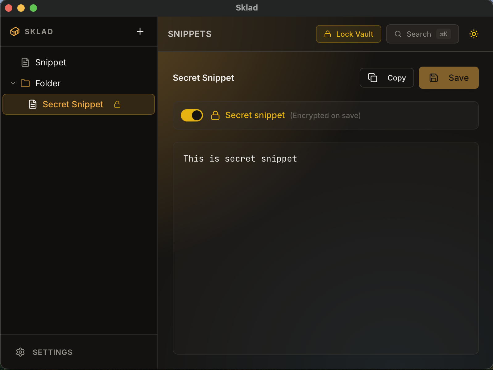

Find anything instantly
Open global search from any application, find a snippet, and copy it without breaking your flow.
Ctrl
Space
Local-first snippet vault
Sklad keeps commands, API keys, passwords, and everyday text close at hand — encrypted locally and available from your system tray.

Your data stays on your machine. That is the feature.
Built for daily use
Sklad lives in the tray, stays out of the way, and turns repeated copy-paste work into a two-second action.
Open global search from any application, find a snippet, and copy it without breaking your flow.
Keep growing collections readable with folders and drag-and-drop.
Capture a new snippet from anywhere with a configurable shortcut.
Work naturally while Sklad keeps local recovery points for you.
Light and dark themes, tray behavior, shortcuts, and lock timing are yours to configure.
The whole workflow
No workspace to open, no account to sign into, and no browser tab to hunt down. Sklad is already there when you need it.
Offline by design
Sklad does not need an account, a server, or internet access. Sensitive snippets are encrypted before they touch disk, and the key is derived from your master password.
Inspect the source codeYour vault never leaves your computer.
AES-256-GCM with Argon2-based key derivation.
No telemetry, background checks, or cloud dependencies.
The implementation is public and auditable.
Available now
Download the latest release from GitHub. No account, subscription, or setup wizard required.
Open latest releasebrew install --cask --no-quarantine Rench321/sklad/sklad
Good to know
No. The application is designed to work fully offline and does not perform telemetry or update checks.
In your operating system's local application-data directory. Sklad can open that location for you from Settings.
Current builds are not code-signed or notarized. The release notes include platform-specific installation guidance.
Visit GitHub Releases or update through your package manager. Sklad intentionally does not make network requests to check for updates.